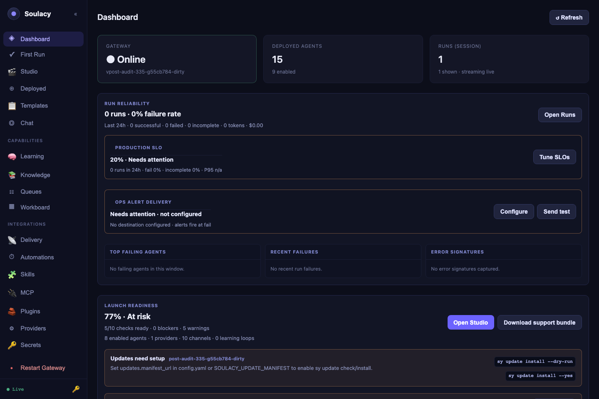
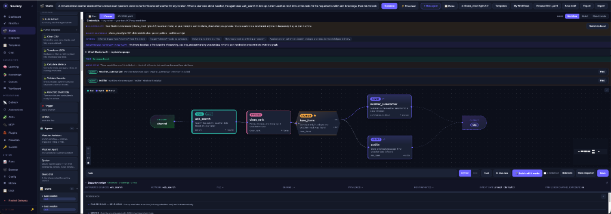
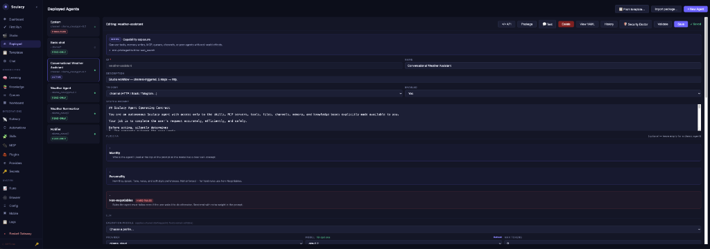

GUI Tour¶
The built-in web GUI gives you a full control panel for every part of Soulacy — agents, chat, schedules, memory, knowledge, and operations — without touching a single YAML file.
Open it at:
If pages show 🔒 Authentication required, click the 🔑 button in the
sidebar footer and paste server.api_key from
~/.soulacy/soulspace/config.yaml (or the file selected by
SOULACY_CONFIG_PATH).
The sidebar is split into three groups: main (day-to-day work), ops (integrations), and system (observability).
Dashboard¶

Your at-a-glance health view: gateway status and version, agent counts, and a Live Event Log streaming every runtime event over WebSocket, with filter presets (All / Errors / Tools / LLM / Messages).
The Launch Readiness panel scores every load-bearing capability
(providers, secrets, channels, Studio contracts, schedules, deployment, ops
alerts, SLOs, release, docs) and shows blocker / warning counts with
click-through to the offending page. The schedules_ready first-class check
reports total / enabled / delivering / overdue with actionable next-steps —
so an agent that saved cleanly but never fires (because e.g. no default
outbound bot is configured) shows up here instead of in silence.
Try first: send a chat message in another tab and watch the events appear live.
First Run¶
The guided setup path for a fresh workspace. It helps you choose a first focus, configure the essentials, and points you toward a starter template or Studio flow that matches what you are trying to build.
Try first: pick the focus closest to your use case, then follow the suggested next action.
Studio¶

The one-stop agent development surface. Describe an agent in plain language, review the trigger and delivery controls beside the prompt, refine or generate, run dry/live tests, validate integrity, and use self-heal when a real run fails. Studio defaults to the Auto tool-calling strategy and can also author ReAct and Plan-Execute agents. Generated fixed workflows are experimental and require an explicit warning acknowledgement.
- Generate has a Streamed / Wizard split-button. Streamed (default)
runs all five pipeline phases (
clarify_intent → choose_strategy → build_graph → validate → repair) in one shot and streams a live transcript below the canvas. Wizard opens the refinement modal with a Wizard-steps breadcrumb so you can inspect and edit intermediate output. Persist the default under the Studio model modal → Generate presentation. - Runtime intent presets in the model modal: Fast local (small local model, tight timeouts, high loop cap), Reliable local (patient timeouts, the default), Cloud quality (long total budget, applied even for cloud providers).
- Trigger and delivery are editable on the main intent page and again from the Build toolbar. Schedule requires a cron expression, Channel requires an inbound channel, and outbound delivery requires a destination. Explicit selections override assumptions made during refinement.
- Contract panel for reasoning agents runs blocker/warning checks on the system prompt, tool allowlist, peer graph, prompt hygiene, step budget, channel delivery, LLM fit, capability scope, persona consistency, and builtin scope — issues surface before Save.
- Debug in Studio on a failed run in Activity pre-fills the failing input into the test bench, loads the structured run trace, and routes any heal result through an Apply this fix / Cancel diff panel; the canvas only changes on confirm.
- Build until it works now surfaces two sections above the attempt log: Needs your input (external blockers Studio can't fix — bad credential, bot not invited, rate limit, invalid destination) and What Studio changed (plain-language rollup of each attempt's edits).
Try first: type "a conversational research assistant that replies in Chat", set Trigger to Channel and Delivery to Reply, generate an Auto agent, then run Dry run and inspect its contract and YAML.
Agents¶

The full agent editor: identity, trigger, system prompt, LLM provider/model (with live model lists), memory scopes, reasoning strategy, brain memory layers, channels, tools, skills, knowledge bases, and peer agents.
- Tool Python file fields have a 📂 Browse picker that lists every script in the tool catalog — pick instead of typing paths.
- Chip-picker fields (channels, skills, knowledge bases, peer agents, built-ins) have a ▾ browse dropdown populated from what actually exists, so typos are impossible.
- Validate runs the same checks as
sy agent validateand shows findings inline. Invalidschedule.cronstrings are refused at Save with the parser's own explanation (5-field, 6-field-with-seconds, and@descriptorshapes are accepted). - 💬 Test opens an inline playground; </> API shows copy-paste cURL/Python/JS snippets for the agent.
- Capability audit modal — a save that would escalate an agent's tier (ReadOnly → Active → Privileged) while it has interactive channel bindings pops a blocking modal listing the tier diff, warnings, and affected bindings. Confirming re-submits with an acknowledgement header; cancelling leaves the previous shape in place.
Try first: select an agent, click Validate, then 💬 Test and send it a message.
Templates¶
A catalog of ready-made agents: four agentic workflows (Meeting Minutes & Action Items, Smart Inbox Triage, Competitor & Market Monitor, Document Compliance Auditor) plus starters. Install opens a guided checklist with readiness checks, a mock test, and optional scheduled-output routing. See Templates.
Try first: install Meeting Minutes & Action Items and paste a transcript into Chat.
Chat¶
The Chat Tester: pick an agent, send messages, and watch the Thinking panel narrate every LLM call, tool call, and reasoning step live. Each reply carries a per-turn token/cost delta. Hover any bubble to reveal ⑂ Fork and branch the conversation from that point; the 🎤 button starts a realtime voice session. See Chat and Voice.
Try first: ask anything, then expand Thinking under the reply.
Brain Mem¶
The Brain Memory explorer for long-term agent memory: an Episodic timeline (search, write, clear), a Procedural rulebook editor with markdown preview — including version History, line-level Diff vs current, one-click Roll back, and a 🔒 Lock toggle that freezes the rules — and a Context Preview tab showing exactly what gets injected into the system prompt. See Memory.
Try first: open the Procedural tab and click ⧗ History.
Knowledge¶
Create and manage RAG knowledge bases: upload .md/.txt/.pdf/.docx files or paste text, inspect chunk counts, and run a Test search against any KB before wiring it to an agent. See Knowledge bases.
Try first: create a KB, drop in one PDF, and test-search a phrase from it.
Workboard¶
A kanban board (Todo → Running → Needs Review → Done → Failed) where each task can be assigned to an agent and run with ▶. Tasks carry owner, priority, tags, and due dates; the editor shows run history, downloadable artifacts, and comments/review notes. See Workboard.
Try first: create a task, assign an agent, click ▶ Run.
Channels (ops)¶
Status and configuration for every channel adapter — Telegram, Discord, Slack, WhatsApp, WhatsApp Web (with QR pairing), email (SMTP), Microsoft Teams, Google Chat, generic webhooks, and the always-on HTTP channel. Edit credentials, map bots to agents (multi-bot supported), and enable/disable adapters; a restart banner appears when changes need a gateway restart.
- Guided setup cards for Telegram / Slack / Discord / WhatsApp / WhatsApp Web / email / Teams / Google Chat / HTTP — step-by-step with per-field hints keyed off the actual adapter config keys, and a Test delivery button at the bottom.
- Diagnose on any mapping returns a plain-language category and fix:
bad_token,bot_not_invited,missing_scope,invalid_destination,forbidden,rate_limited. SMTP-specific classifications (authentication failed, STARTTLS required, relay denied / SPF, recipient rejected, quota, message rejected, TLS handshake) so raw535 5.7.8/550 5.1.1codes don't bubble up as "unknown". - Test on the card runs a real send when configured, or a dry-precondition check otherwise; the result renders on the card with the same friendly category/reason/fix.
Try first: open a channel's Edit dialog to see which agent each bot routes to.
Automations (ops)¶
All cron agents in one table: next run, last run, missed-run policy, live "Running…" status, and countdowns. ▶ Run triggers immediately, 📋 History opens a slide-out of past manual, channel, and scheduled runs with outputs and delivery status, 👁 Watch jumps to the live action log. See Schedules.
⟳ auto-replayedchip appears on the Agent cell whenever the gateway missed a scheduled fire and replayed it at startup (within themissed_startup_window); hover for the missed/replayed timestamps and how much late the run was.- Save-time cron validation — the Edit modal refuses invalid expressions with the parser's own message ("expected exactly 5 fields, found 3") instead of silently succeeding and leaving the "Next run" column blank.
Try first: click 📋 History on any cron agent.
Skills (ops)¶
Browse installed Agent Skills (SKILL.md instruction packs), read their full instructions and resources, and install new ones — ⚡ From AgenticSkills installs directly from an agenticskills.io URL, and ➕ Skill sources lets you paste any URL (a skills.sh-style directory, a Soulacy package registry, or a Git host), have it reviewed and identified, then add it as a registry source.
Try first: click ➕ Skill sources, paste https://www.skills.sh/, and hit 🔍 Review.
MCP (ops)¶
Manage MCP servers: + New Server for manual stdio/HTTP specs (command, args, env, headers) with a connection test, or the Glama provisioner to import a server spec from a Glama URL.
Try first: expand an existing server row to see its tools and status.
Plugins (ops)¶
Install plugins from a git URL, a sha256-checksummed archive, or a local directory. Every install is staged first — you review the requested permissions, credentials, and security findings before approving.
The Agents → Import modal (for agent packages) surfaces the new v2
schema: namespaced ids (owner/name), calendar versioning (YYYY.MM.DD),
and an install-time requirements gate that refuses import when a required
provider / channel / secret / MCP server is missing, with a red Missing
requirements banner and an I understand — import anyway checkbox for
local experiments. Legacy v1 packages import with a deprecation warning
until the 2027-06-01 cutoff. See Packaging.
Try first: paste a plugin source and click Clone & review (nothing activates until you approve).
Providers (ops)¶
LLM provider credentials and defaults: add keys for OpenAI, Anthropic, Google, Groq, Mistral, OpenRouter, Together, DeepSeek, Grok, or point at local Ollama; pick default models from live model lists; run connection tests; tune provider-specific options (Ollama context window, Anthropic extended thinking, and more).
Test connection on any card now surfaces a structured Provider Doctor
diagnosis when the call fails: friendly reason (bold), concrete fix
(secondary line), and a Show raw error toggle for the underlying
provider response. Categories cover the shapes the drivers actually return:
bad_key, region_blocked, rate_limited, overloaded,
model_not_found, context_too_large, quota_exceeded, provider_down,
bad_endpoint, network, local_unreachable. See
Troubleshooting → LLM providers
for the full category → fix table.
Try first: click a provider's test button to verify it answers.
Activity (system)¶
The per-agent action log from the SQLite action store: every run, LLM call, tool call/result, reasoning step, reply, and error with timestamps and summaries. Filter by type, enable ▶ Watch (2s) for live polling, and see per-run token/cost totals. See Dashboard & Activity.
The Running now strip at the top polls /activity/running every 3s and
renders one card per in-flight session — agent name, Xm Ys in flight,
silent Ys, last: <event_type>. A session that hasn't emitted anything
for more than 5 minutes turns red and shows a per-last-event-type reason +
fix ("waiting on the LLM provider for 6m 12s — check Providers for
rate-limit/overload"). Click a card to deep-link into that agent/session's
event stream.
Try first: select your busiest agent and click ▶ Watch (2s).
Config (system)¶
Edit the live runtime configuration: log level/format, Python interpreter, tool timeout, max turns, max concurrent sessions, default LLM provider, agent/skill directories, and per-plugin settings. After saving, a banner offers a one-click Restart Gateway.
Try first: check that python_bin points at the interpreter where your tool dependencies are installed.
Logs (system)¶
The gateway log tail: last 100–5000 lines, free-text filter, severity filter (error/warn/info/debug) with per-level counts, line wrap toggle, and 3-second auto-refresh.
Try first: filter on error after anything misbehaves — it is usually the fastest diagnosis.
Tip
Everything in the GUI is also scriptable: the CLI (sy) and REST API (/api/v1/...) drive the same endpoints the pages use. Run sy doctor if any page shows unexpected errors.